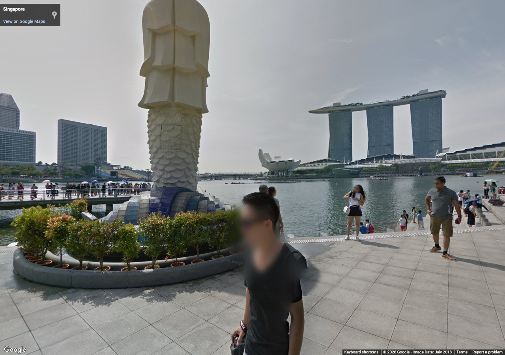
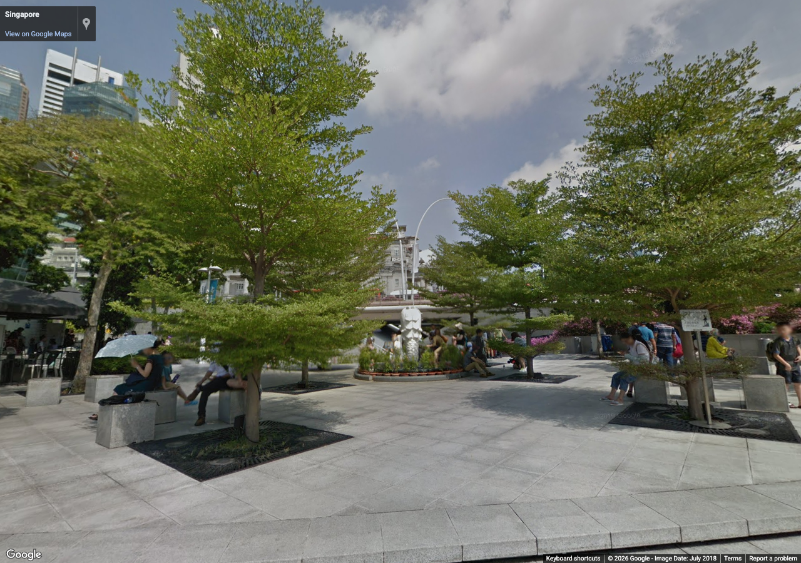
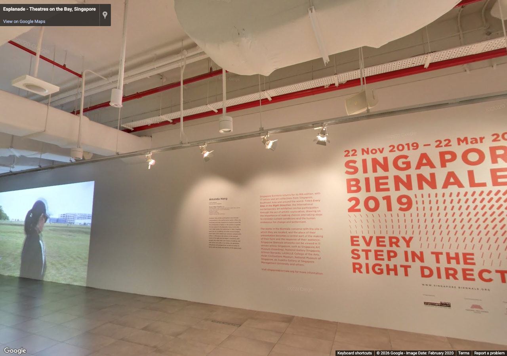
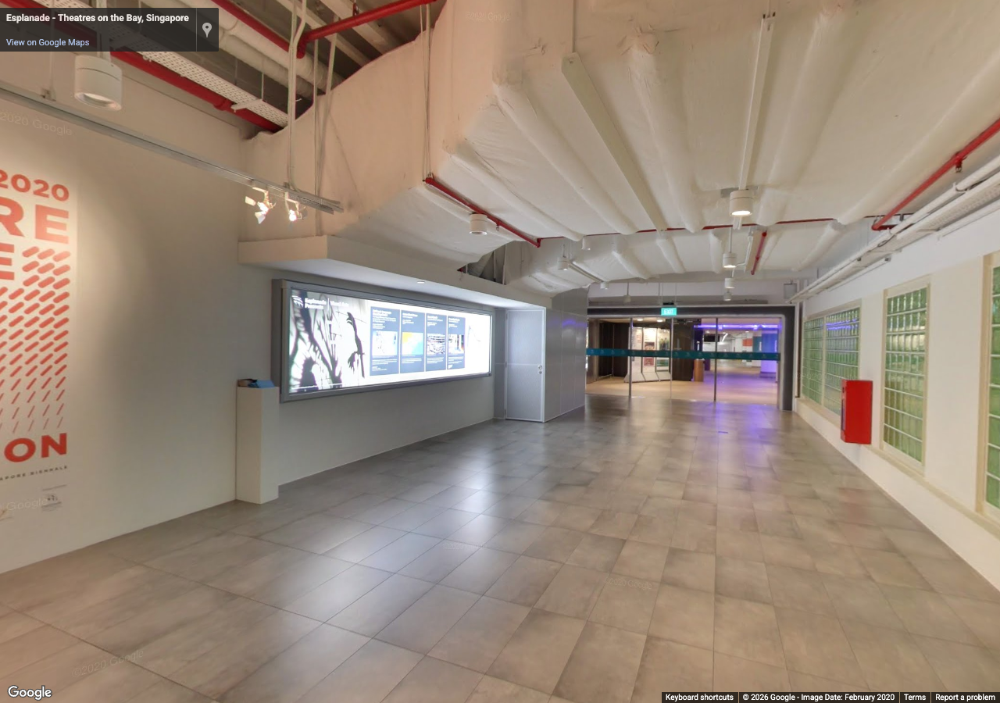
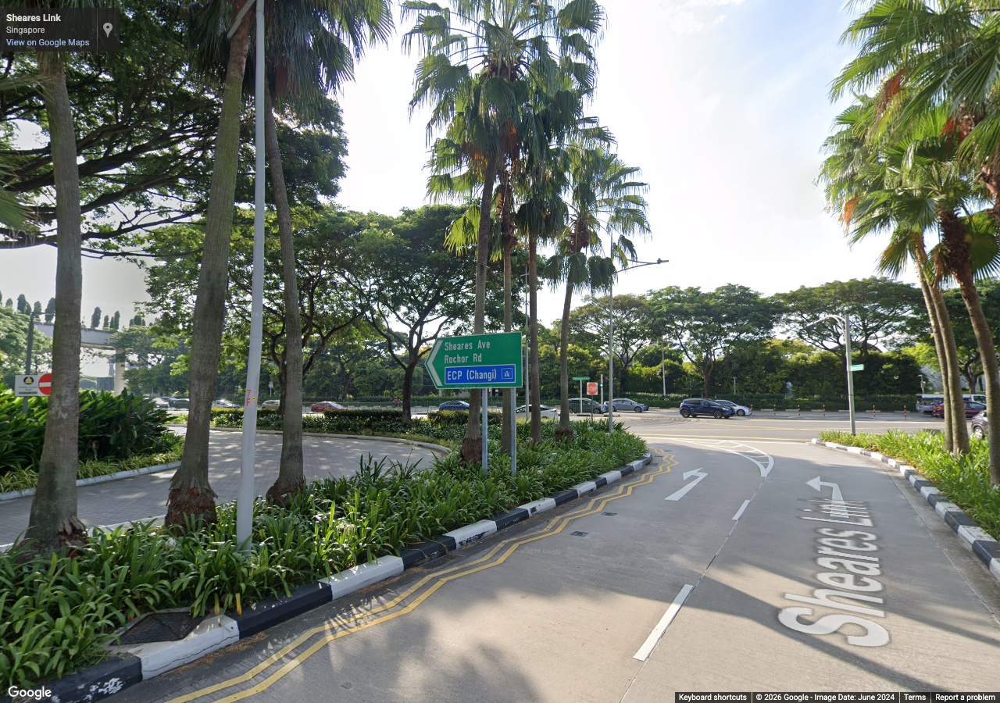
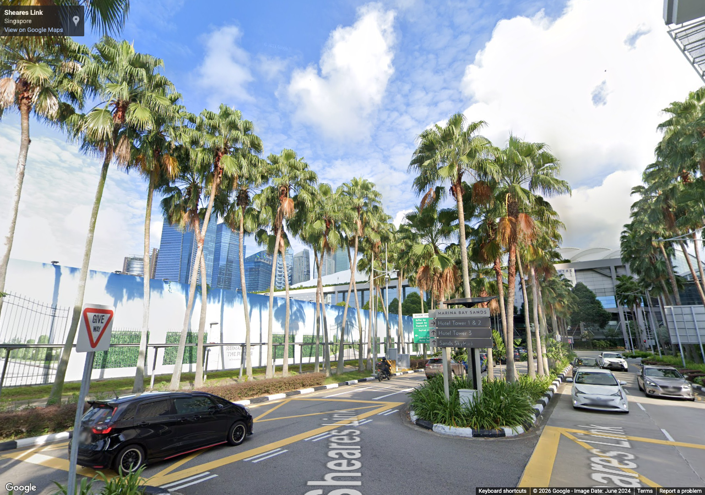
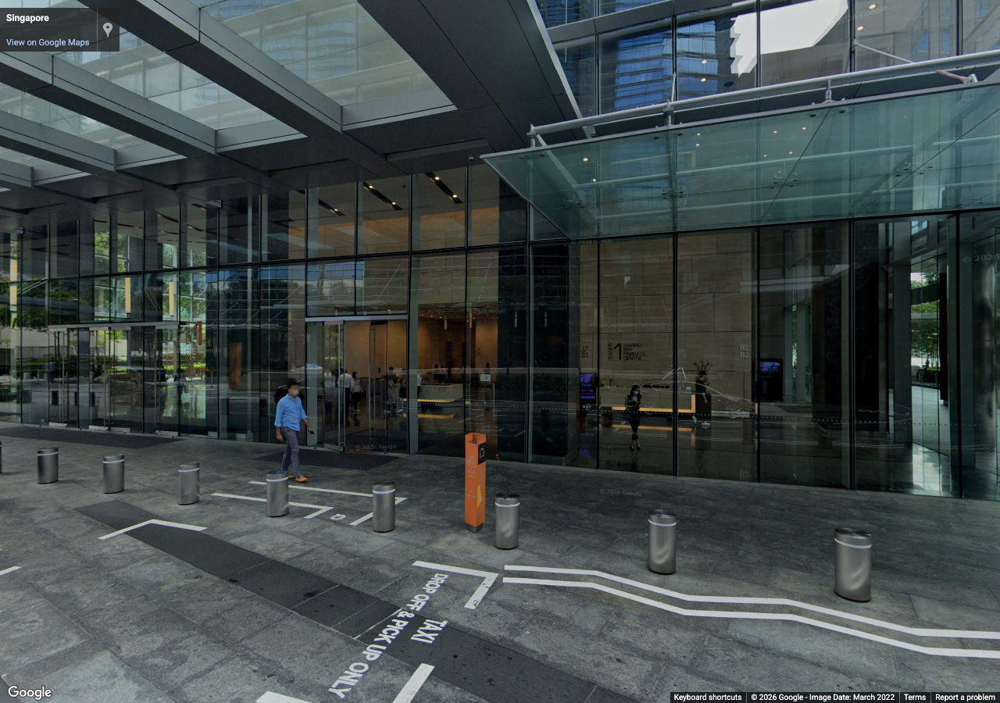
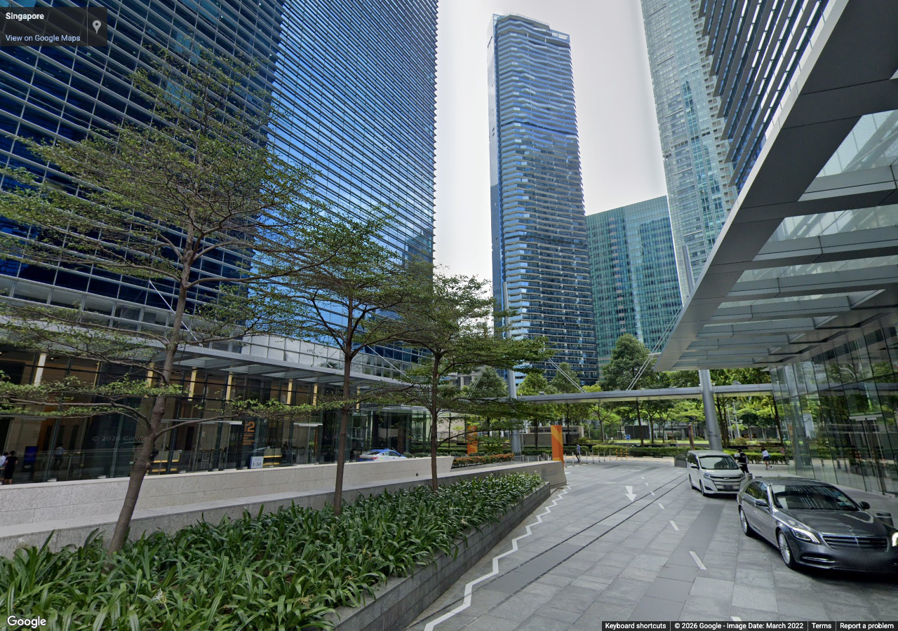

marina-expansion-batch-02
Authorized reference screenshots. Attribution retained. Open full-size images to review clarity; capture success alone is not visual acceptance.

merlion-waterfront-east — Merlion waterfront terraces and bay edge
Source 2018-07, heading 90°, pitch 0°, zoom 1. Metadata / review

merlion-city-west — Fullerton architecture and surrounding street
Source 2018-07, heading 270°, pitch 8°, zoom 1. Metadata / review

esplanade-shells-east — Esplanade shell silhouette and facade
Source 2020-02, heading 90°, pitch 10°, zoom 1. Metadata / review

esplanade-bay-south — Esplanade waterfront and bridge approach
Source 2020-02, heading 180°, pitch 0°, zoom 1. Metadata / review

bayfront-gardens-east — Eastern district landscape and paths
Source 2024-06, heading 90°, pitch 5°, zoom 1. Metadata / review

bayfront-sands-west — Sands rear facade and road proportions
Source 2024-06, heading 270°, pitch 15°, zoom 1. Metadata / review

south-promenade-north — Southern promenade connections and paving
Source 2022-03, heading 0°, pitch 0°, zoom 1. Metadata / review

south-city-west — Southern district towers and landscape
Source 2022-03, heading 270°, pitch 15°, zoom 1. Metadata / review